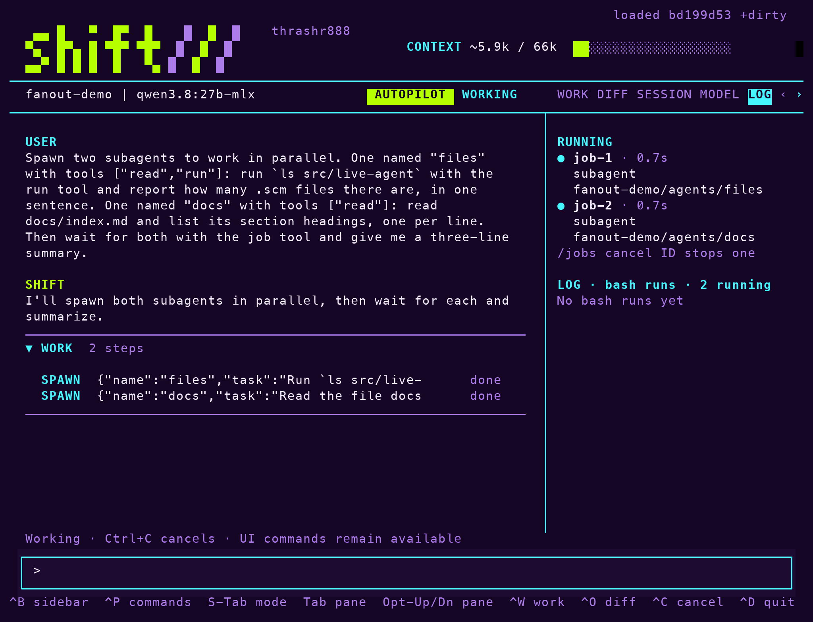
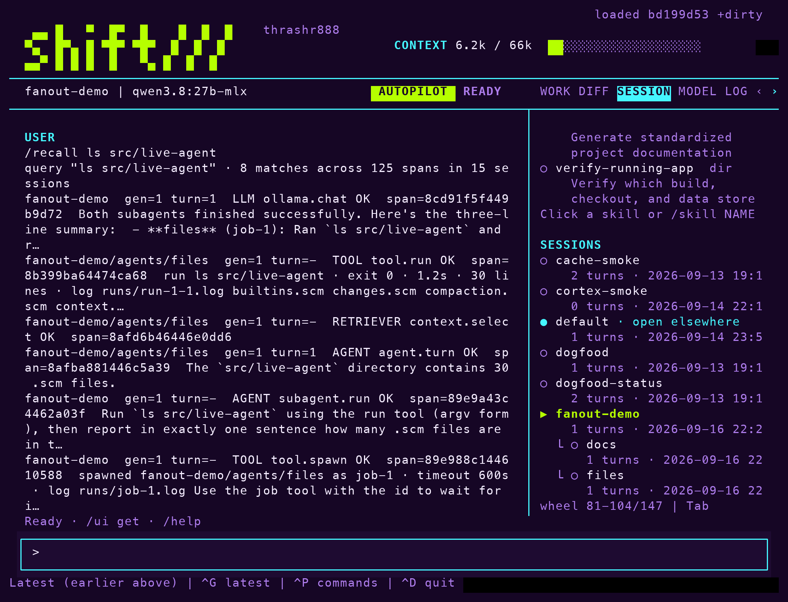

The agent is a Scheme file. Edit it inside the session and the next turn runs the new behavior. Each accepted edit is a numbered generation, and one command returns to the previous one. The session keeps its context and its receipts.
The terminal is yours the same way. Four themes ship, each also a Ghostty theme, and the layout, the panes and the wordmark are files you change.
Start with the interface. Your name, your colors, your layout. The session stays with you.
In the real terminal
/name your-name /brand replace /place bottom /ui save userMake it personal. Keep it next time.
shift
And when you want to change how I work, the behavior is Scheme you can edit live.
❯Your next idea goes here.ILLUSTRATIVE TRANSCRIPT
A browser interpretation of Shift’s curses TUI, which opens by default in an interactive terminal; this is not a terminal emulator. The /// mark cycles only while simulated work is active. Reduced-motion preferences are respected.
02 / Take the colors with you
Your terminal. Same palette.
Every Shift theme is also a Ghostty theme, generated from the same presentation pack the TUI loads: sixteen ANSI colors, cursor and selection included.
Generated by scripts/ghostty_themes.py from themes/*.scm; the slots a pack does not name are complementary picks. Reload Ghostty’s configuration after saving. Inside Shift, /theme still selects the pack.
03 / Bring your own panes
Your project. Its own tab.
A pane pack gives a project an inspector tab of its own: text, live session values, and allowlisted commands, declared as Scheme data in .shift/panes.scm. Read, never evaluated.
One form. No code.
Shift’s own checkout ships this pack; the tab appears whenever Shift runs there.
Live patches use a constrained Scheme surface, not a resource or semantic sandbox. Trusted runtime and built-in extension changes still require a restart.
05 / Fan out. Remember.
Subagents are folders. Traces are memory.
A child is a whole session in a folder under its parent, started as a background job. Every session’s traces stay searchable from any other.

spawn twice in one turn. Both children run in parallel under the session’s job ceiling; job wait joins each one.Children live in agents/ under the parent, nested again for grandchildren. Each is an ordinary session you can resume.

/recall searches every session’s traces in the project, subagents included. Hits name their session and span, so the full record is one lookup away.
Captured from a real session against a local model. Children share the working tree; a workspace fork per child is the follow-up.
06 / Start small. Make it yours.
Meet your next instrument.
Try the terminal without a model first. Then connect a provider when you’re ready to put the live loop to work.
Use macOS or Linux with Git, Make, Guile 3.0, ripgrep, and Python 3 with curses, in an interactive terminal. No API key or local model needed for this demo.
The checked-in image defaults to Ollama with qwen3.8:27b-mlx. You’ll need Ollama running and a compatible, tool-capable model installed, or credentials for a supported remote provider. Model availability and hardware requirements vary.
Run ./bin/shift-agent in an interactive terminal for the interface, or brew install thrashr888/tap/shift and run shift-agent anywhere. To keep the saved demo separate, use ./bin/shift-agent --session first-run; the demo session retains its demo-model setting.
Shift is an executable experiment, not a finished product. Expect rough edges. Read the source, inspect changes, and use it in projects where you can review and recover your work.